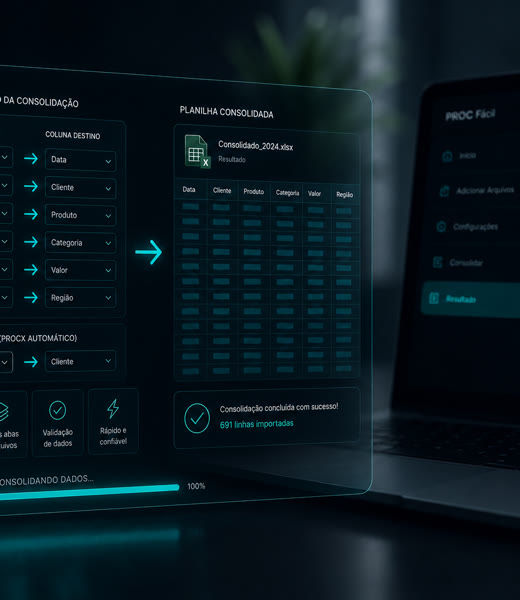
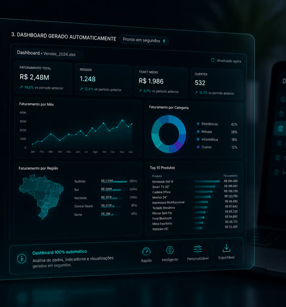

Organizador Automático de Arquivos
Organiza, classifica e move arquivos para pastas conforme regras definidas, reduzindo etapas manuais e facilitando a localização de documentos.
ANALISTA ADMINISTRATIVO · PROCESSOS · OPERAÇÕES · BACKOFFICE
Mais de 20 anos de trajetória em diferentes ambientes profissionais. Uso Excel, Python, análise de dados e IA para organizar informações, reduzir tarefas manuais e apoiar decisões.
Conhecer minha trajetóriaMais de 20 anos em atendimento, negócios, operações, indústria e qualidade.
Experiência com PPAP, MSA, capabilidade, calibração, documentação, rastreabilidade e auditorias.
Excel, Python, análise de dados e IA usados para organizar informações e reduzir etapas manuais.
Projetos aplicados a controle, acompanhamento, análise e melhoria de rotinas.
Processos administrativos + tecnologia
Minha experiência em rotinas administrativas e qualidade me ajuda a identificar tarefas repetitivas, dados desorganizados e pontos de retrabalho. A partir desse diagnóstico, aplico análise de dados, Python e inteligência artificial para desenvolver soluções mais organizadas, confiáveis e adequadas à realidade do processo.
Rotinas repetitivas que aumentam o esforço operacional e poderiam ser executadas com mais agilidade.
Dados espalhados que dificultam a localização, a consolidação e a análise das informações.
A ausência de padronização aumenta o risco de falhas, inconsistências e atividades refeitas.
Informações importantes ficam dispersas e pouco acessíveis para apoiar decisões.
Analiso o contexto, as regras e o que realmente precisa ser resolvido.
Estruturo os dados e defino padrões para aumentar a consistência, a rastreabilidade e a qualidade.
Seleciono e aplico Python, análise de dados e inteligência artificial de acordo com a necessidade de cada processo.
Testo o funcionamento, a organização das informações e a usabilidade antes de apresentar a solução.
É assim que conecto experiência administrativa e tecnologia para construir processos mais organizados, confiáveis e eficientes.
Meus projetos
Projetos desenvolvidos para automatizar tarefas, conectar informações e tornar rotinas administrativas mais organizadas, claras e confiáveis.
Organiza, classifica e move arquivos para pastas conforme regras definidas, reduzindo etapas manuais e facilitando a localização de documentos.
Consolida dados de diferentes arquivos e planilhas, automatizando cruzamentos e consultas que normalmente exigiriam fórmulas manuais.

Transforma dados de planilhas em painéis visuais e relatórios organizados para facilitar o acompanhamento de indicadores.

Contribuição profissional
Minha atuação combina experiência em qualidade e rotinas administrativas com análise de dados, automação e melhoria contínua. Essa integração me permite compreender a operação, estruturar informações e desenvolver soluções adequadas ao contexto de cada equipe.
Vivência com padronização, documentação, rastreabilidade, análise de dados e melhoria de rotinas em ambiente administrativo e industrial.
Capacidade de compreender fluxos, identificar gargalos e estruturar informações antes de propor mudanças ou ferramentas.
Uso de Excel, Python, análise de dados e inteligência artificial para apoiar tarefas administrativas e reduzir etapas manuais.
Atenção à consistência dos dados, facilidade de uso, documentação e comunicação das soluções desenvolvidas.
Método de trabalho
Antes de desenvolver qualquer ferramenta, compreendo o contexto, organizo as
informações e estruturo o fluxo.
A tecnologia entra depois, como apoio para construir, testar e documentar
uma solução adequada à realidade do processo.
Compreendo o problema de verdade, identifico necessidades, restrições e o que realmente precisa ser resolvido.
Reúno, classifico e padronizo as informações para reduzir dispersão, inconsistências e dúvidas durante o desenvolvimento.
Transformo o diagnóstico em um processo claro, com etapas, regras, decisões e responsabilidades bem definidas.
Aplico automação, análise de dados e inteligência artificial de acordo com a necessidade, sem colocar a ferramenta acima do processo.
Valido o comportamento da solução, reviso inconsistências e documento o processo para facilitar o uso, a manutenção e a continuidade.
Compreendo o problema de verdade, identifico necessidades, restrições e o que realmente precisa ser resolvido.
Reúno, classifico e padronizo as informações para reduzir dispersão, inconsistências e dúvidas durante o desenvolvimento.
Transformo o diagnóstico em um processo claro, com etapas, regras, decisões e responsabilidades bem definidas.
Aplico automação, análise de dados e inteligência artificial de acordo com a necessidade, sem colocar a ferramenta acima do processo.
Valido o comportamento da solução, reviso inconsistências e documento o processo para facilitar o uso, a manutenção e a continuidade.
Tecnologia como apoio
 Python
Python Inteligência artificial
Inteligência artificial APIs
APIsContato profissional
Estou disponível para oportunidades remotas nas áreas administrativa, processos, operações e backoffice. Conheça minha trajetória e entre em contato pelo canal mais conveniente.
Escolha o canal mais adequado para iniciar uma conversa profissional.
Para oportunidades profissionais, informe a vaga, a empresa e uma breve descrição do contexto.